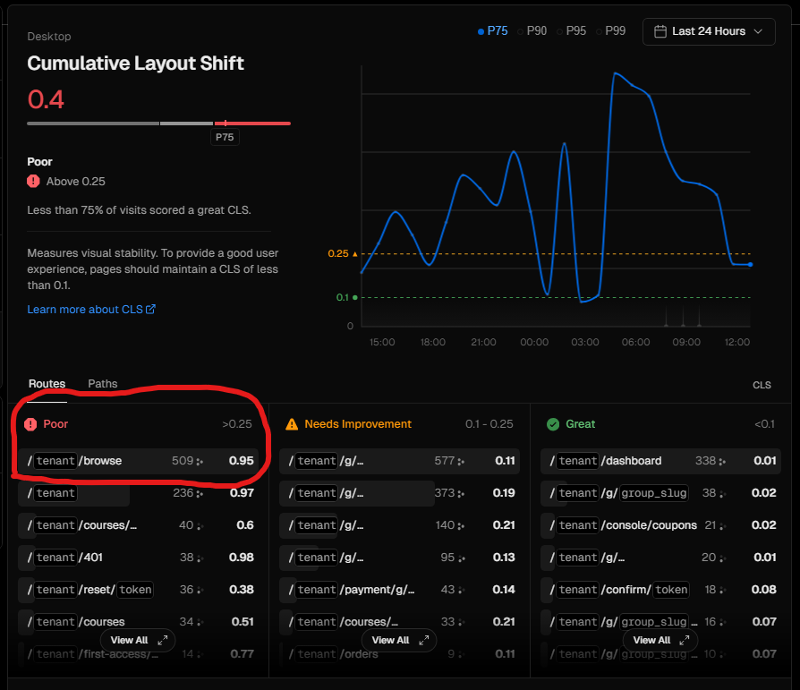
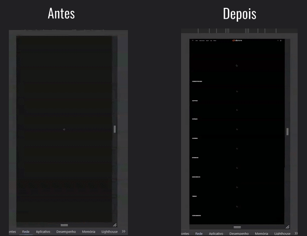
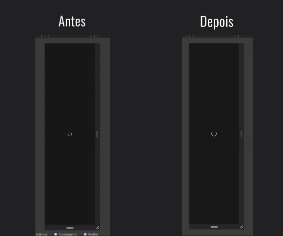

Otimização de CLS na página principal da plataforma
Core Web Vitals · Performance · UX
A principal página da plataforma possuía um CLS classificado como Poor pelo Core Web Vitals. Ao carregar todo conteúdo sem nenhum espaço reservado, toda interface se deslocava bruscamente, atingindo negativamente tanto a métrica quanto o UX.
Contexto
A /browse é a página com maior volume de acessos do produto 2.0 da Ensinio. Analisando as métricas de Core Web Vitals via PageSpeed Insights, ela apresentava o pior CLS da plataforma: 0.95 no desktop, bem acima do threshold de 0.25 considerado "Poor".

A dor
Os slides e conteúdos da página carregavam sem espaço reservado, fazendo a interface se deslocar abruptamente enquanto os elementos apareciam. Além de frustrar o usuário (podendo causar cliques acidentais), esse comportamento prejudicava diretamente o ranqueamento no Google.
O que foi feito
Implementei placeholders com dimensões fixas para os slides e demais conteúdos, garantindo que a interface não se deslocasse durante o carregamento. Adicionei um spinner de loading para dar feedback visual ao usuário enquanto o conteúdo é buscado.
Resultados
CLS desktop caiu de 0.900 para 0.040 (redução de 96%). CLS mobile caiu de 0.800 para 0.070 (redução de 91%). A página passou da faixa "Poor" para "Good" no Core Web Vitals, melhorando o ranqueamento no Google e eliminando os deslocamentos de interface.


Tecnologias
Seu negócio também precisa de resultados?
Vamos conversar